ايبوكسي نقي عالي الاداء من مركبين للاحمال الثقيلة ولكافة اعمال زرع حديد التسليح الافقية
والعمودية
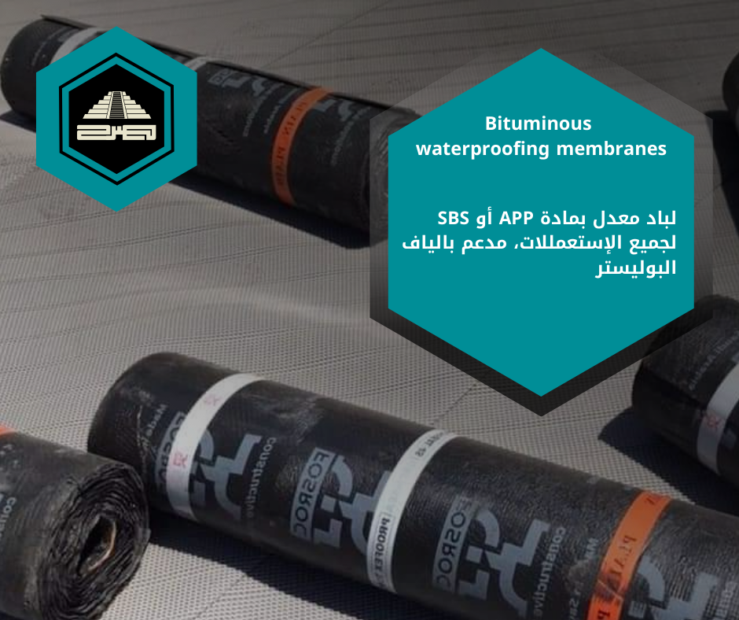
Bituminous waterproofing membranes
لباد معدل بمادة APP أو SBS لجميع الإستعمللات، مدعم بالياف البوليستر
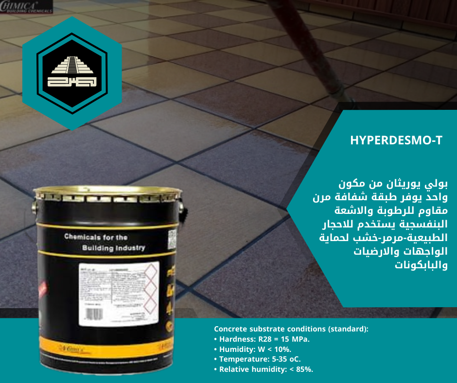
HYPERDESMO-T
بولي يوريثان من مكون واحد يوفر طبقة شفافة
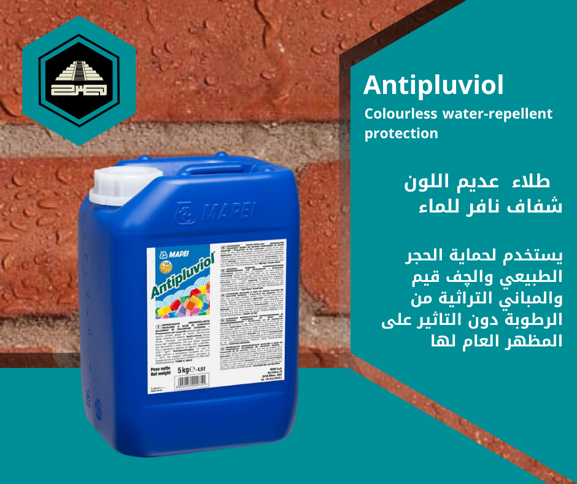
Antipluviol
يستخدم لحماية الحجر الطبيعي والچف قيم والمباني التراثية من الرطوبة دون التاثير على المظهر
العام لها
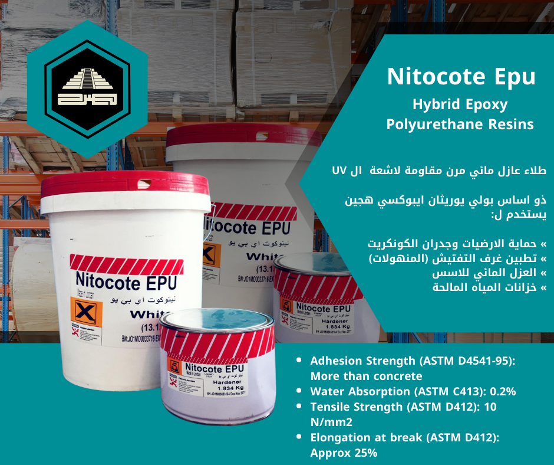
Nitocote EPU
طلاء عازل مائي مرن مقاومة لاشعة ال UV.
ذو اساس بولي يوريثان ايبوكسي هجين
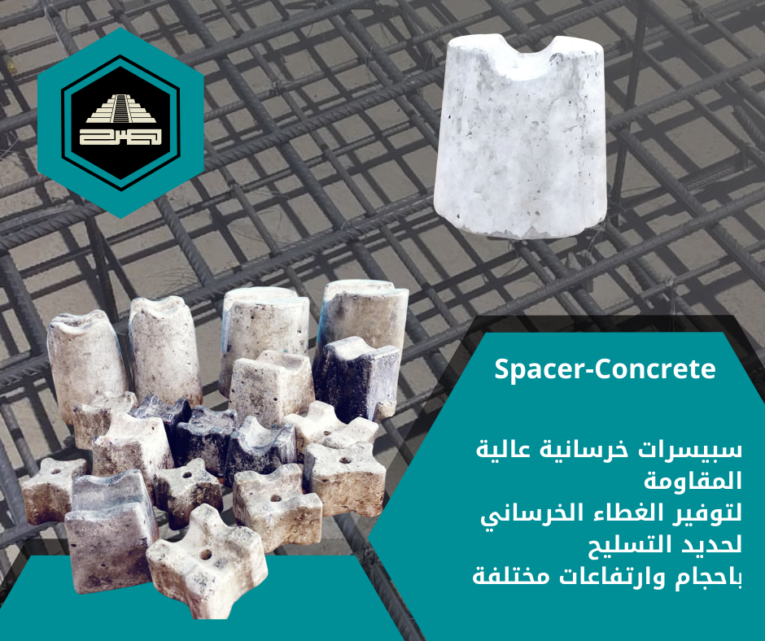
Spacer-Concrete
لتوفير الغطاء الخرساني لحديد التسليح باحجام وارتفاعات مختلفة
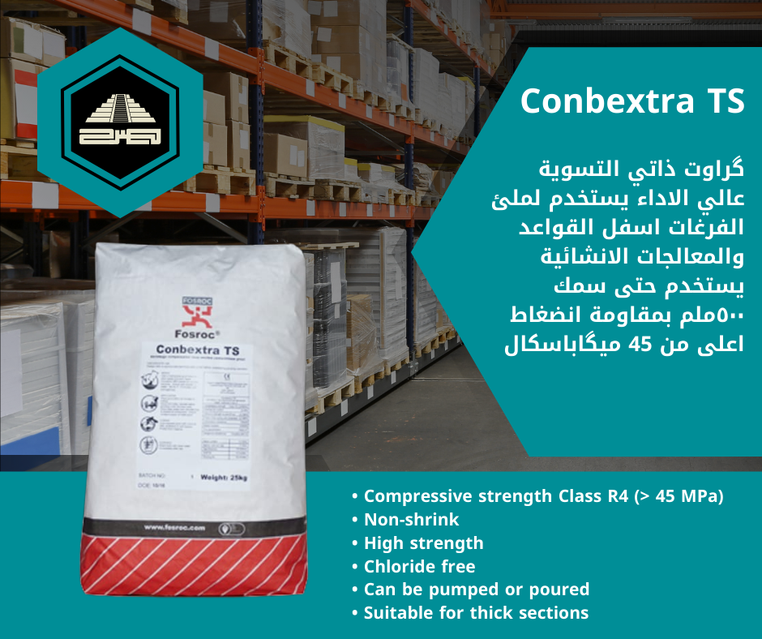
Conbextra TS
گراوت ذاتي التسوية عالي الاداء
يستخدم لملئ الفرغات اسفل القواعد والمعالجات الانشائية
يستخدم حتى سمك ٥٠٠ملم
مقاونة انضغاط اعلى من 45 ميگاباسكال
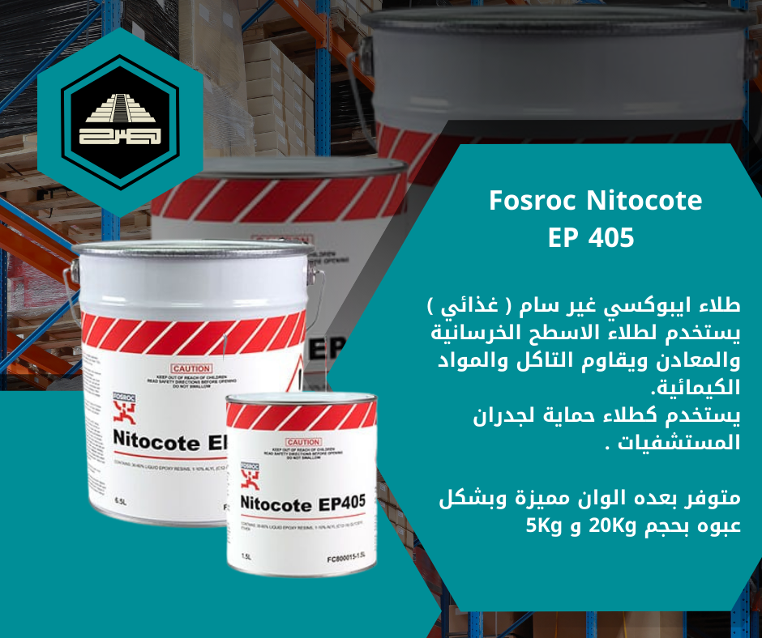
Fosroc Nitocote EP 405
طلاء ايبوكسي غير سام ( غذائي )
يستخدم لطلاء الاسطح الخرسانية والمعادن
يستخدم كطلاء حماية لجدران المستشفيات
مقاوم للتاكل والمواد الكيمائية
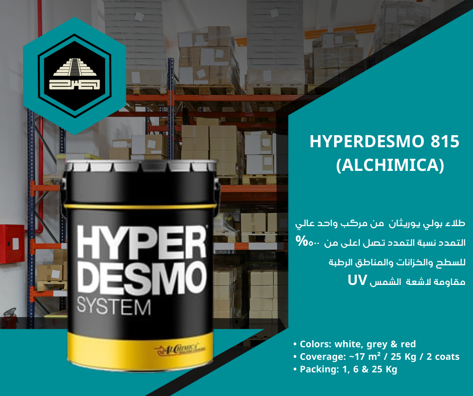
HYPERDESMO 815 (ALCHIMICA)
طلاء بولي يوريثان من مركب واحد عالي التمدد نسبة التمدد تصل اعلى من٥٠٠% للسطح والخزانات
والمناطق الرطبة
مقاومة لاشعة الشمس UV
Nitocote ET402E
ذو مقاومة ممتازة للمواد الكيميائية والتآكل
يستخدم لاعمال العزل المائية للاسس وحمايتها من تأثير الاملاح.
يستخدم لتبطين منهولات الصرف الصحي.
يستخدم لخزانات المياه المالحة وقنوات المياه.
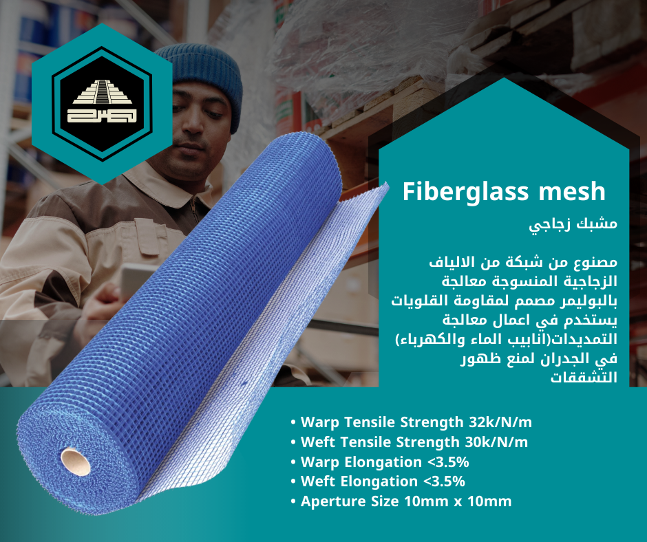
Fiberglass mesh
مصنوع من شبكة من الالياف الزجاجية المنسوجة
معالجة بالبوليمر
مصمم لمقاومة القلويات
يستخدم في اعمال معالجة التمديدات(انابيب الماء والكهرباء) في الجدران لمنع ظهور التشققات
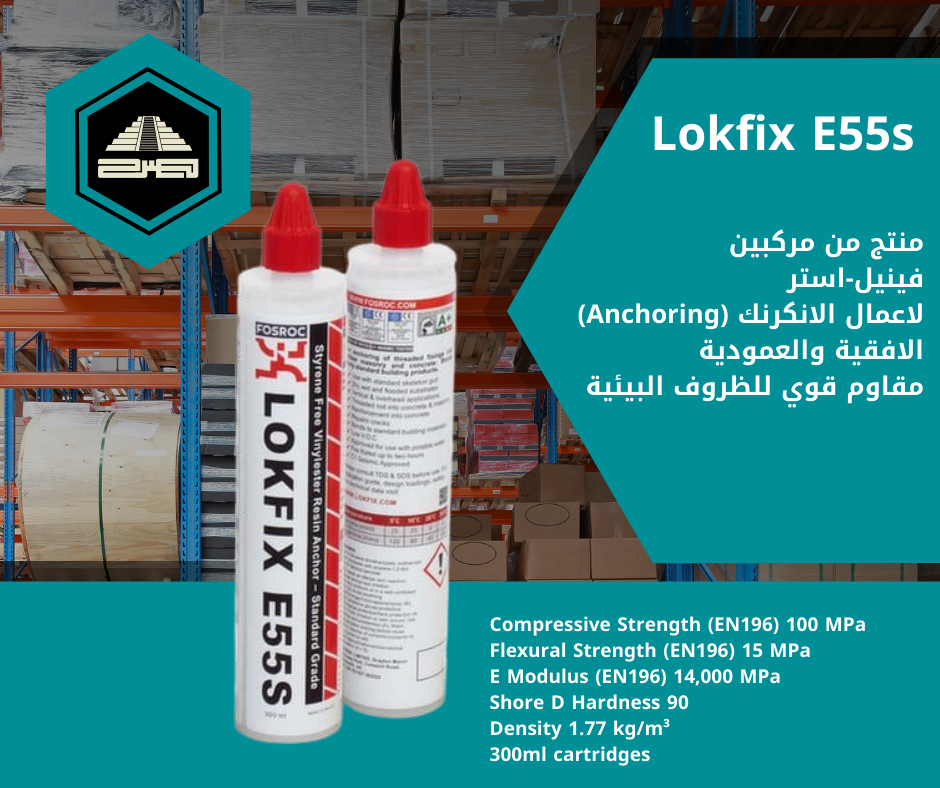
Lokfix E55s
منتج من مركبين فينيل-استر
لاعمال الانكرنك (Anchoring) الافقية والعمودية
مقاوم للظروف الخارجية (استخدام خارجي)
معالجة التشققات
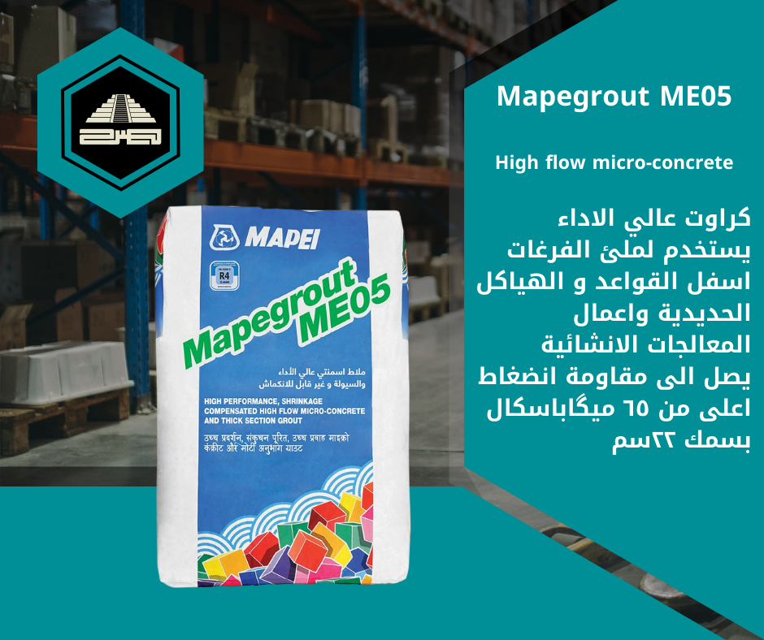
Mapegrout ME05
ذو مقاومة ممتازة للمواد الكيميائية يستخدم لملئ الفرغات اسفل القواعد و الهياكل الحديدية واعمال المعالجات الانشائية.
يصل الى مقاومة انضغاط اعلى من ٦٥ ميگاباسكال بسمك ٢٢سم.
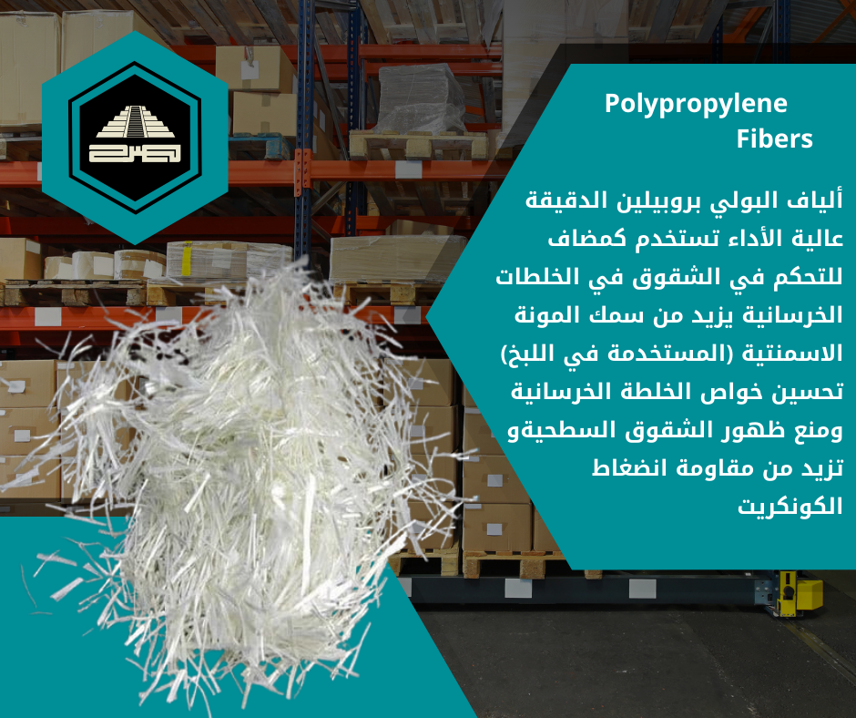
Polypropylene Fibers
ألياف البولي بروبيلين الدقيقة عالية الأداء
مضاف للتحكم في الشقوق في الخلطات الخرسانية
مضاف يزيد من سمك المونة الاسمنتية (المستخدمة في اللبخ) مع عدم ظهور تشققات
تحسين خواص الخلطة الخرسانية ومنع ظهور الشقوق السطحية
تزيد من مقاومة انضغاط الكونكريت حسب المواصفات القياسية ASTM C 1116
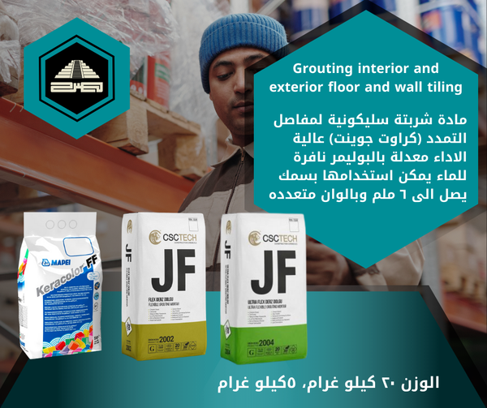
Grouting interior and exterior floor and wall tiling
منتج من مركبين فينيل-مادة شربتة سليكونية لمفاصل التمدد (كراوت جوينت)
عالية الاداء
معدلة بالبوليمر
نافرة للماء
يمكن استخدامها بسمك يصل الى ٦ ملم بالوان متعدده و باوزان ٢٠ كيلو غرام و ٥ كيلو غرام.
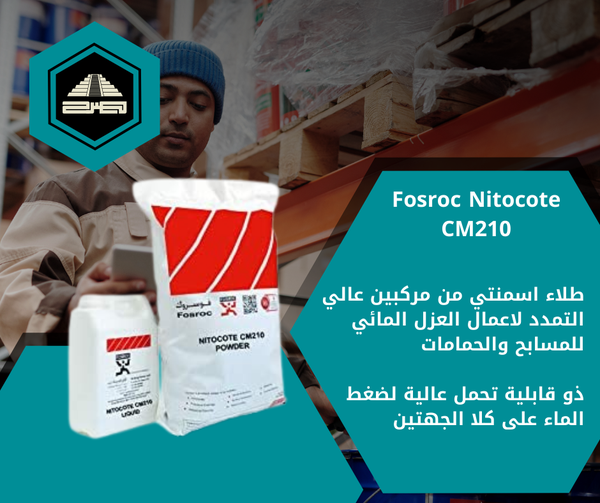
Fosroc Nitocote CM210
طلاء اسمنتي من مركبين عالي التمدد يستخدم لاعمال العزل المائي للمسابح والحمامات له قابلية تحمل عالية لضغط الماء على جهتي الطلاء...
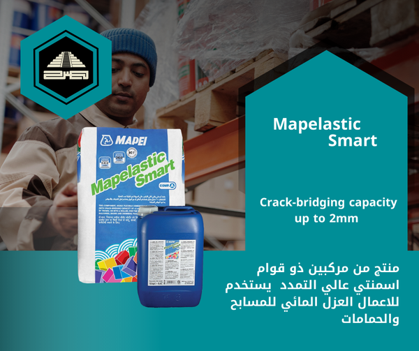
Mapelastic smart
ألياف البولي بروبيلين الدقيقة عالية منتج من مركبين ذو قوام اسمنتي عالي التمدد...
يستخدم لاعمال العزل المائي للمسابح والحمامات
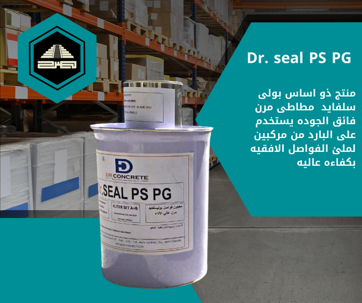
Dr. Seal PS PG
منتج ذو اساس بولى سلفايد مطاطى مرن فائق الجوده
يستخدم على البارد من مركبين لملئ الفواصل الافقيه بكفاءه عاليه
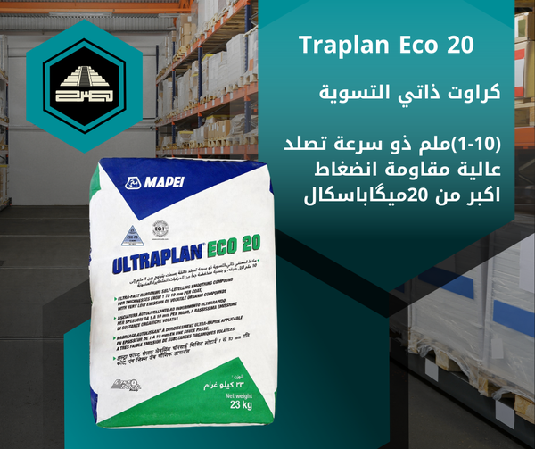
Traplan Eco 20
الوزن ٢٠ كيلو غرام...
يمكن استخدامه بسمك (1-10)ملم
ذو سرعة تصلد عالية
مقاومة انضغاط اكبر من 20ميگاباسكال
نسبة المركبات المتطايرة منخفضة جدا
ذو اساس راتنجي غني بالزنك لحماية حديد التسليح من التآكل
يعتبر حاجز ضد الكلوريدات
ومتوافق مع جميع انواع الخلطات الخرسانية
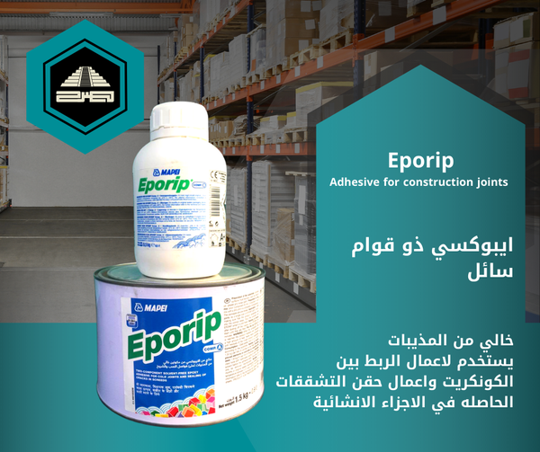
Eporip (Adhesive for construction joints)
ايبوكسي ذو قوام سائل يتكون من مركبين خالي من المذيبات يستخدم لاعمال...
الربط بين الكونكريت
حقن التشققات الحاصل في الاجزاء الانشائية
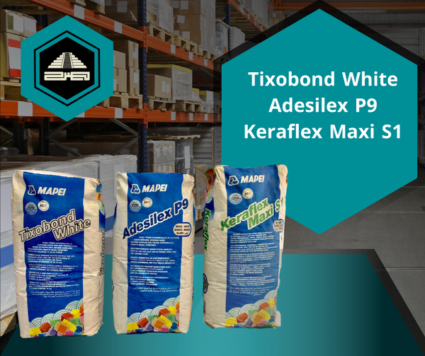
Tixobond White Adesilex P9 Keraflex Maxi S1
لواصق اسمنتية عالية الاداء
للاستخدام الداخلي والخارجي والواجهات
من شركة ماركة مابية الايطالية
غنية عن التعريف
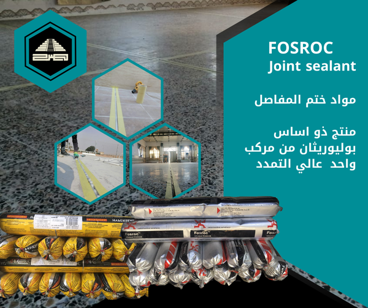
FOSROC Joint sealant
منتج ذو اساس بوليوريثان من مركب واحد
عالي التمدد
قابلية الالتصاق على كافة الاسطح
للاستخدام الداخلي والخارجي والمناطق الرطبة
مقاومة ممتازة لل UV
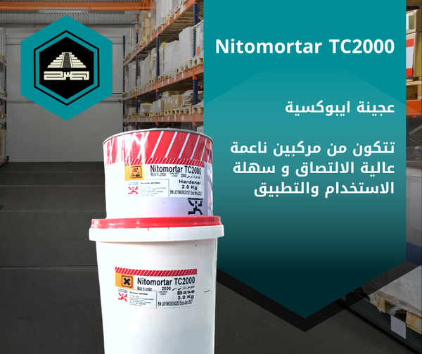
Nitomortar TC2000
سهلة الاستخدام يمكن تطبيقها للاسطح العمودية والافقية
مقاومة كيميائية عالية 🛡 بوزن ٥ كيلو غرام.
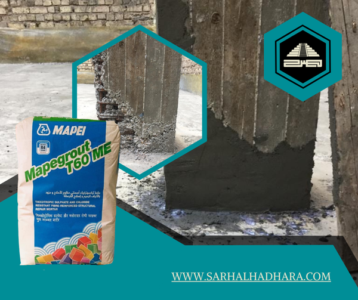
Mapegrout T60 ME
خاصة بمعالجة التسوسات والحفر التي تحصل للكونكريت بعد رفع القوالب نتيجة انعزال مكونات الكونكريت او لأي سبب آخر.
تصل مقاومتها الى ضعف مقاومة الكونكريت
مقاومة للأملاح التي تسبب الصدأ لحديد التسليح
قوام متغير الانسيابية او يسمى ثيكستروبيك
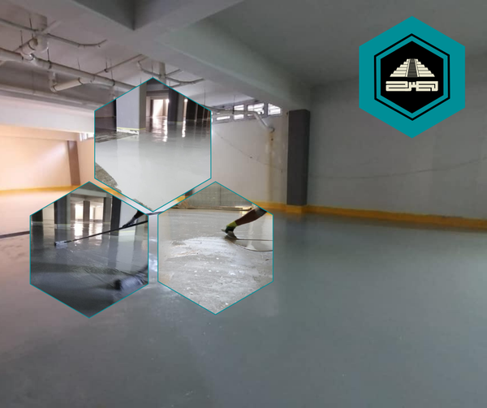
ارضيات الايبوكسي
راتنجات صناعية تكون بهيئة سائل عند طلائها على الكونكريت تكوّن طبقة صلبة مقاومة للاهتراء الميكانيكي والاحتكاك والدهون والشحوم والزيوت وغيرها.
تتنوع اشكالها بين الايبوكسي الخالي من المذيبات والايبوكسي المحتوي على مذيبات .
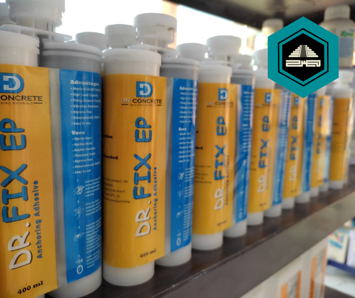
مادة ايبوكسي
مادة ايبوكسي نقي خاصة لزراعة حديد التسليح
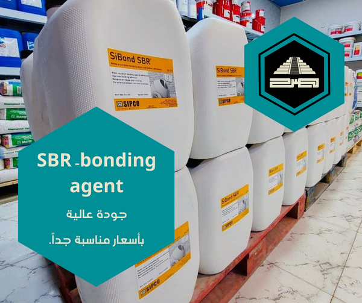
SBR -bonding agent
مادة مضافة الى الكونكريت او المونة الاسمنتية لتحسين خواصها لمقاومة الرطوبة والاملاح وكذلك زيادة قوة الربط بين المونة والخرسانة القديمة والجديدة . 🛡
كذلك من اهم استخداماتها في اعمال تطبيق بلاطات المرمر والبورسلين وزيادة قوة الالتصاق .
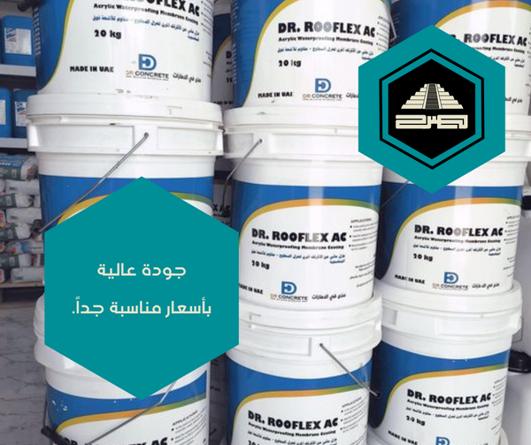
ROOFLEX AC
طلاء عازل للرطوبة مقاوم لأشعة الشمس فوق البنفسجية
بنسبة تمدد ٨٠٠٪ ذو اساس اكريلكي
يستخدم لعزل وتجديد السطوح الكونكريتية او الأشتايگر والفرشي .
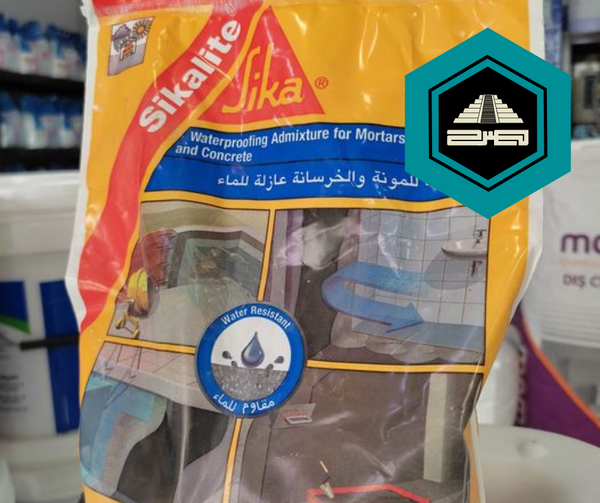
Sikalite
باودر يضاف الى الكونكريت لتقليل النفاذية ومقاومة الرطوبة
لكل كيس اسمنت 50 كغم يضاف كيس واحد بوزن 1 كغم .
يستخدم في اعمال بناء البادلو او المكانات المعرضة للرطوبة مثل صبة ارضية الحمامات وغيرها
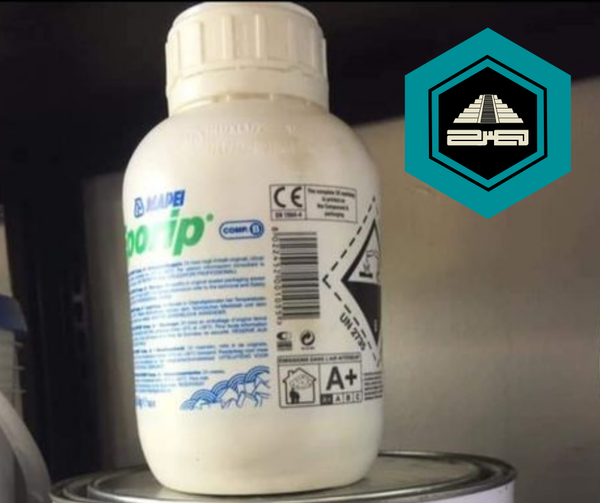
مادة ايبوكسي
مادة ايبوكسي تستخدم للربط بين الكونكريت القديم والجديد وتستخدم ايضاً لمعالجة التشققات في الكونكريت .
TEKNO
گلو خاص للبورسلين والگرانيت والسيراميك للتطبيقات الداخلية والخارجية .
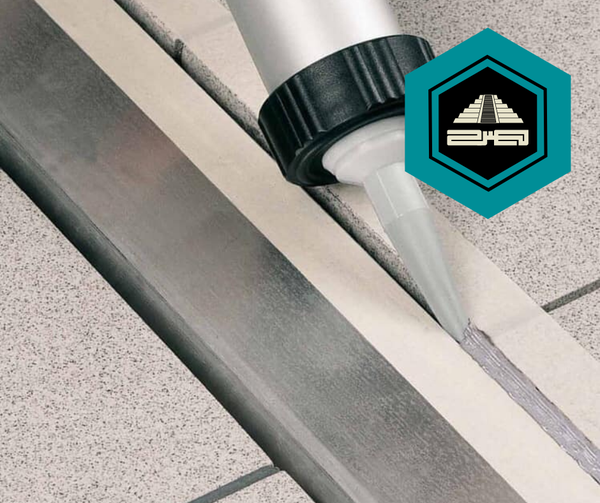
مادة ذات اساس بوليوريثان
تستخدم لملئ مفاصل التمدد واعمال لصق السيراميك والمرمر والزجاج
معالجة اماكن نضوح المياه عازلة للرطوبة ومقاومة للكيمياويات والدهون والزيوت والشحوم ملئ مفاصل الاشتايكر والكونكريت والابواب والشبابيك.